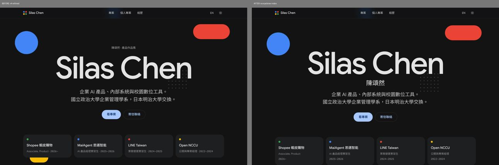
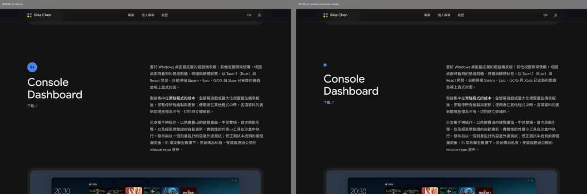
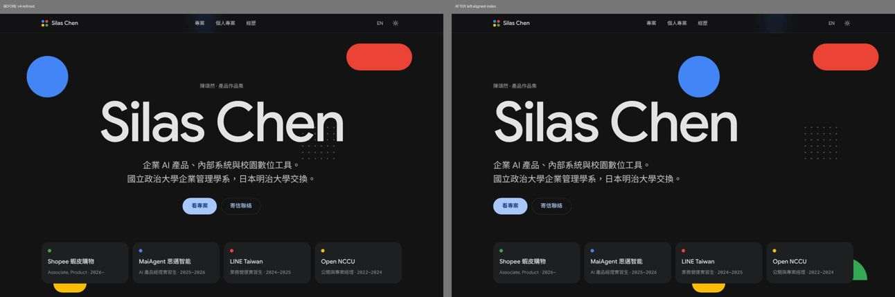
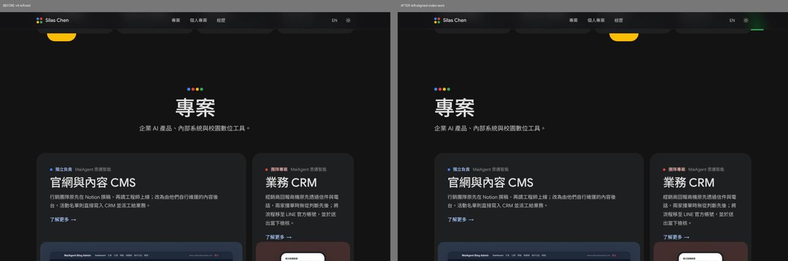
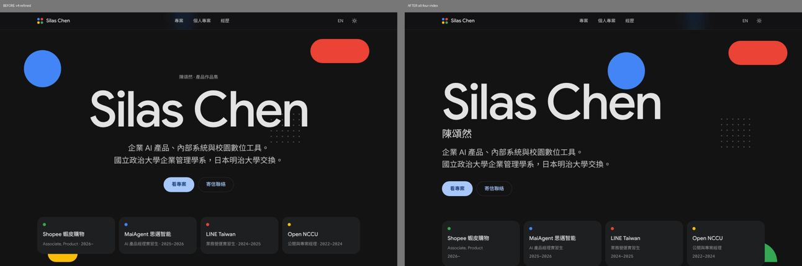
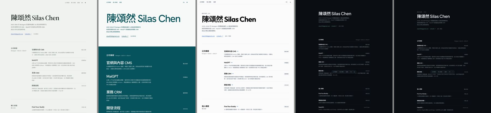
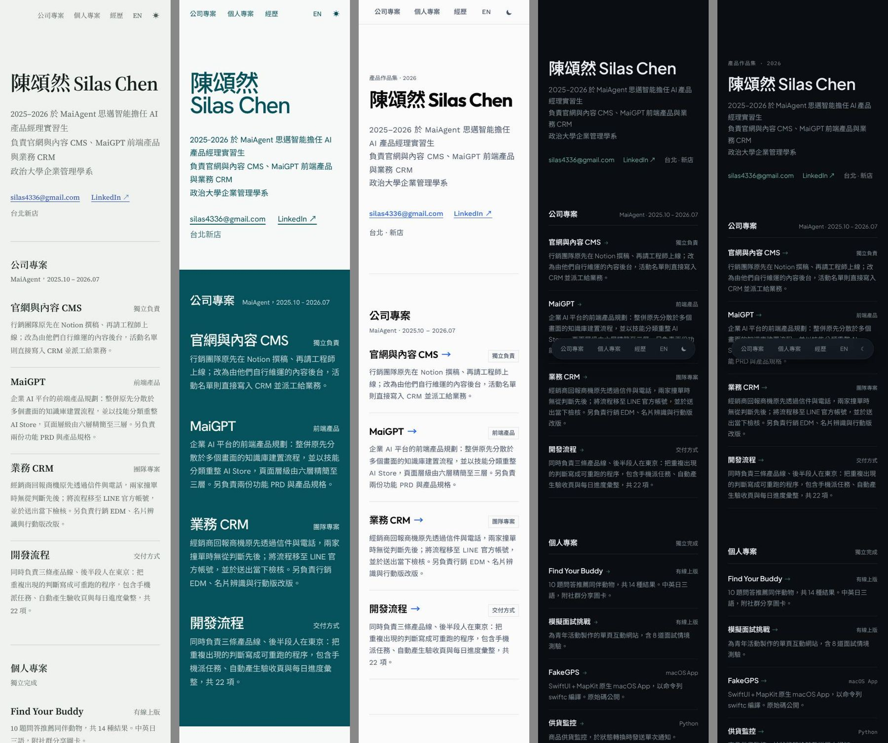
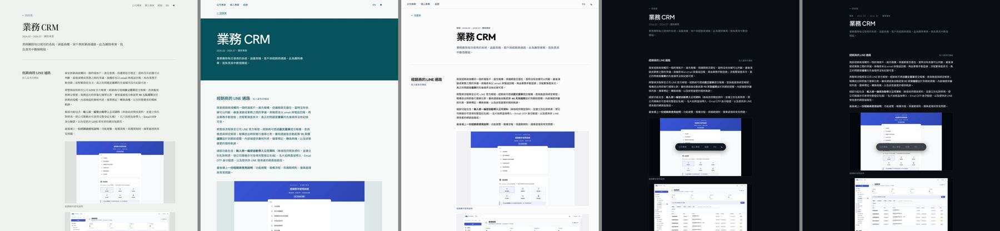
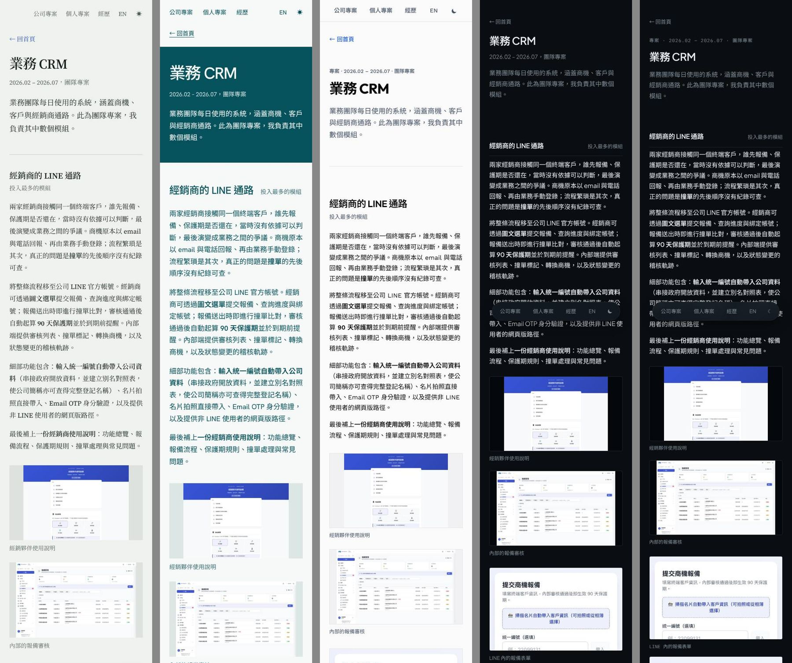

設計版本預覽
這頁沒有從任何地方連過來，也不會被搜尋引擎收錄。
- 建議版v4 精修版；拿掉標題上方小字、動效只留開場、拿掉章節編號；開場一句「先確認問題，再決定要做什麼；需要時，自己把它做出來。」下方接四張專長卡。英文版文案尚未改。
其他版本（參考用，之前並行做過的所有選項）
首頁文案三個方向：開場改講專長與工作方式，不強調特定經歷（以精修版為基礎，只改中文首頁）
- A 專長「產品經理。從釐清問題、撰寫規格到上線交付，也以 AI 輔助開發直接做出原型。」下方四張專長卡，各連到專案
- B 工作方式「產品經理。先確認問題，再決定要做什麼；需要時，自己把它做出來。」下方「我怎麼工作」四個習慣
- C 技能標籤「產品經理。產品規格、使用者流程與 AI 輔助開發。」經歷卡換成六個技能標籤，改動最小
v4 審核選項：skill 規則與 v4 衝突的地方，每版只改一件事（以精修版為基礎）
- 拿掉標題上方小字與中點「陳頌然 · 產品作品集」改成 h1 下的「陳頌然」；專案頁的所屬單位移進 chip；經歷卡的「職稱 · 年份」拆成兩行。依據 Impeccable、frontend-design
- 動效只留一個時刻內容直接出現，不再每塊淡入上浮；卡片 hover 不上浮；換頁不淡出。保留 hero 形狀與主視覺展開。依據 Impeccable、taste、Emil
- 拿掉章節編號專案頁的 01、02 編號圓改成同色小圓點（這個連結直接開個人專案頁）。依據 Impeccable、taste
- 靠左對齊hero、章節標題、專案頁頂端改靠左，形狀移到右側。依據 taste、frontend-design
- 四項全套用以上四項一起





五個 skill 版本並排比較（左到右：frontend-design、taste-skill、UI/UX Pro Max、Impeccable、Emil Kowalski）



